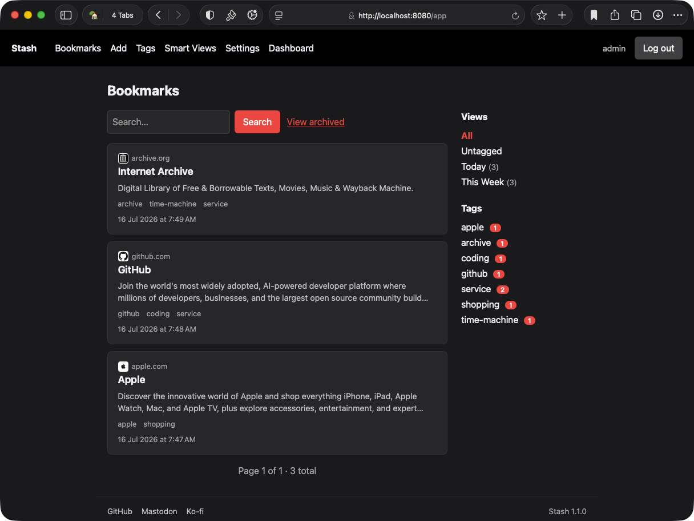
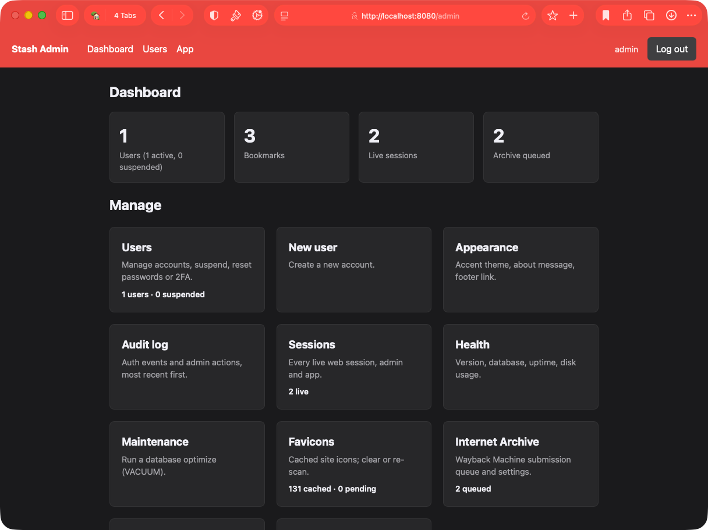

Your bookmarks. Your server. Your data.
Stash is a fully private bookmark manager you host yourself, with native iOS and macOS apps that work offline, a full web interface, a command line tool, and a browser extension.


Private and yours
Your data lives on infrastructure you control. No third party cloud, no tracking, no ads. Even favicons are cached and served by Stash itself, so your bookmarks never leak to an outside CDN.
Every platform
Native iOS and macOS apps with Share Extensions keep a full local copy of your
library, so you can browse and save offline while changes sync automatically once
you reconnect. Plus a full web interface, the stash command line tool,
and a Firefox and Chrome browser extension.
Organized
Flat and hierarchical tags, full text search, bulk rename and delete, saved Smart Views built from AND/OR condition queries, and a read later flag for anything you want to come back to.
Secure by default
Optional two factor authentication (TOTP) with single use recovery codes, per user isolation, and a separate admin role.
Portable
Import from Anybox, browser bookmark exports, Raindrop.io, Pinboard, or another Stash instance, export everything as JSON, and submit any bookmark to the Internet Archive's Wayback Machine for long-term preservation. No lock in.
Yours to theme
Light, Dark, or Auto on every page, plus an accent theme of your choosing for the whole instance.
A real admin toolkit
Health checks with automatic update notifications, a one click database optimize, a favicon cache manager, an audit log, an active sessions viewer with instant revoke, a live log tail, and full instance backup and restore, everything to run, troubleshoot, and migrate your own instance from the dashboard.
Open source
Stash is free and open source under AGPL 3.0 (server) and MIT (clients). If it saves you time, a coffee on Ko-fi helps keep the project going.
Fast and lightweight
Deploy with Docker or run directly, no heavyweight dependencies. Stash stays out of your way so you can focus on your bookmarks.